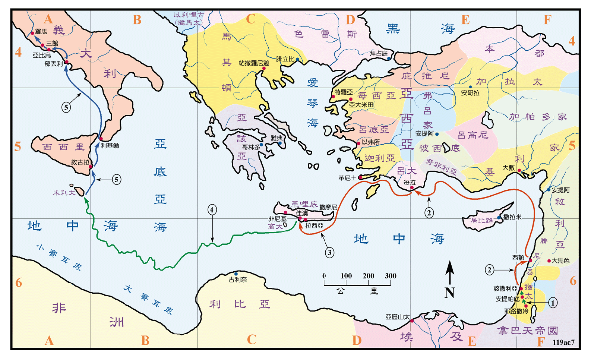

约是主后57至62年之间

行动线说明
| 序号 | 圣经 | 说明 |
|---|---|---|
| 1 | 徒21:27-23:30 | 保罗在耶路撒冷被捉，送到该撒利亚。 |
| 2 | 徒23:31-26:32 | 在该撒利亚被囚两年，受审后，送去罗马。 |
| 3 | 徒27:1-8 | 保罗被押乘船经西顿、每拉到了佳澳。 |
| 4 | 徒27:9-44 | 保罗等在海上历经风浪的危险到了米利大。 |
| 5 | 徒28:1-16 | 从米利大经叙拉古，利基翁，部丢利就到了罗马。 |
| 徒28:17 | 保罗在罗马等待受审期间，就在罗马住了两年，传扬福音。 |
犹太人捉拿了保罗要杀害他，但被罗马兵所救，后送到军营中，再送到该撒利亚受审，在该撒利亚被囚了两年之后，再被押往罗马。保罗不论是在公会、狱中、罗马巡抚、旅途任何环境中，都放胆的传道。在被押到罗马后，在候审期间的两年之中，仍然不断的放胆传讲神国的福音，使福音传到了罗马。他同时也在罗马写了以弗所书、歌罗西书、腓利门等四卷书信。
使徒行传到此结束，但是众使徒和保罗的工作并没有停止。从新约圣经中、以及教会历史的记载，保罗在主后62年获释，他又展开他第四度的旅行布道，远至当时最西方的士班雅 (即是现今的西班牙)，再到革哩底建立教会，又到亚西亚、马其顿，在腓立比时，他写了提摩太前书和提多书。随后返回罗马。主后67年保罗再度在罗马被囚，在被囚的地牢中，他写了提摩太后书。在主后68年被处死。